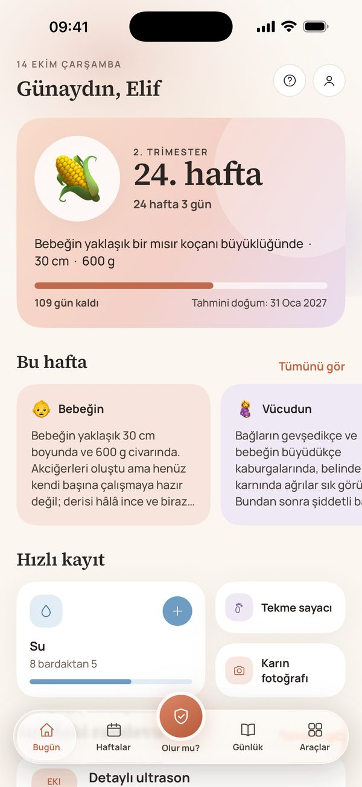
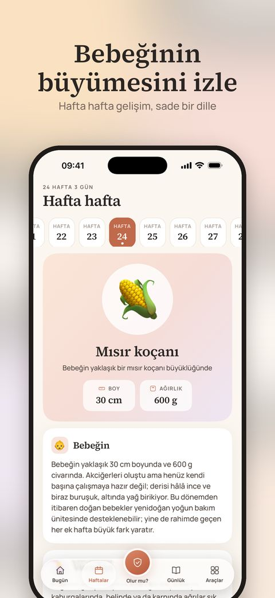
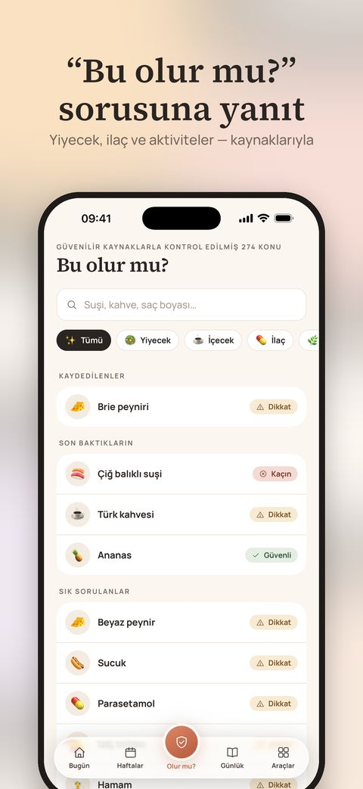
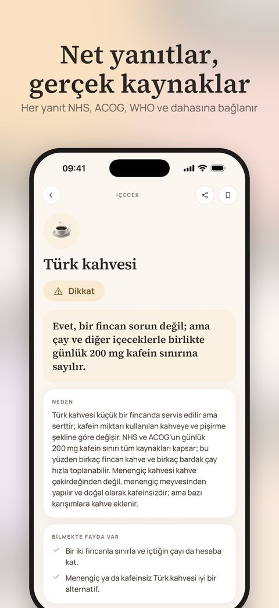
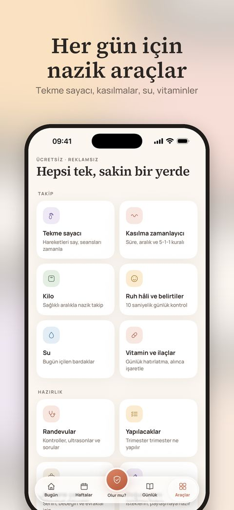
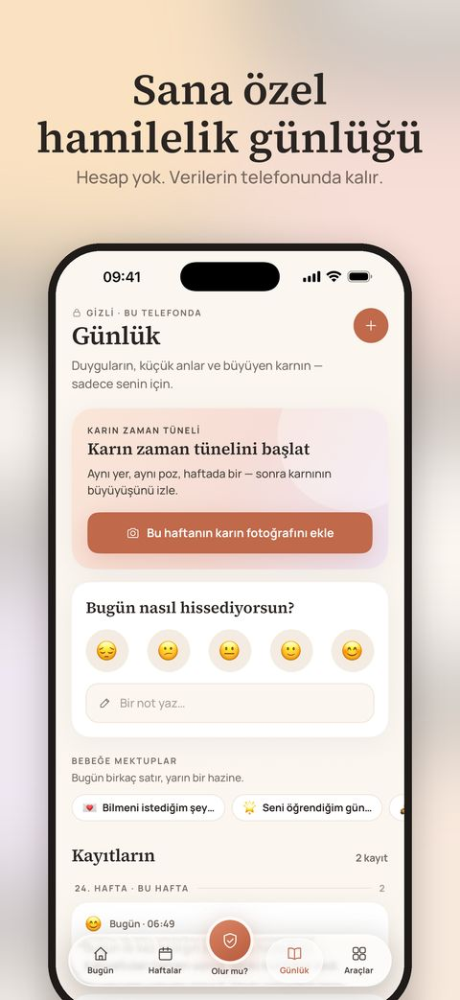

English · Türkçe · Español · Deutsch · Français · Português
Önümüzdeki dokuz ay için sakin bir yol arkadaşı.
Hafta hafta rehber, “Bu olur mu?” sorularına gerçek kaynaklı net yanıtlar ve her gün için nazik araçlar — hepsi gizli, doğrudan iPhone’unda.
App Store’dan indirÜcretsiz · iPhone · Hesap gerekmez

Aradığın her şey, tek bir nazik yerde
Hafta hafta
Bebeğinin boyu, neyin geliştiği, senin neler hissedebileceğin ve 1’den 42’ye her hafta için üç pratik ipucu.
“Bu olur mu?” yanıtlandı
270+ yiyecek, ilaç, güzellik ürünü ve aktivite — her biri net bir sonuç, nedeni ve dayandığı rehberlere bağlantılarla.
Bu normal mi?
55 yaygın belirti sakin bir dille anlatılır; neyin iyi geldiği ve ebeni, doktorunu ya da acil yardımı ne zaman araman gerektiği net şekilde.
Nazik araçlar
Kilit ekranında Canlı Etkinlik olarak çalışan tekme sayacı ve kasılma zamanlayıcı; ayrıca widget’lar, randevular, su, vitaminler ve daha fazlası.
Sana özel bir günlük
Karın fotoğrafları, ruh hâli, notlar ve bebeğine mektuplar. Hesap yok — günlüğün telefonundan hiç çıkmaz.
Yaşadığın yere göre
English, Türkçe, Español, Deutsch, Français ve Português dillerinde; yerel yiyecekler, ulusal rehberler ve ülkenin acil numarasıyla.
Yakından bak





🔒 Baştan gizlilik odaklı
Reklam, analitik, takip ve hesap yok. Girdiğin her şey cihazında kalır. Satın alımları Apple yürütür; doğrulama için anonim bir kimlik kullanılır.
✨ Marigold Plus — isteğe bağlı
Temel özellikler ücretsiz. Plus; doktora hazır PDF rapor, günlüğünü hatıra kitabına dönüştürme ve karın fotoğrafı kolajı ekler — ücretsiz denemeli aylık abonelik ya da tek seferlik Hamilelik Paketi.
Marigold, kamu sağlık rehberlerinden derlenen genel bilgiler sunar. Tıbbi tavsiye ya da tıbbi cihaz değildir. Her zaman ebene ya da doktoruna uy; acil bir durumda yerel acil numarasını ara.
Baby Bloom’un yapımcılarından — yenidoğanınla hayat için nazik bir yol arkadaşı. Baby Bloom’u keşfet →